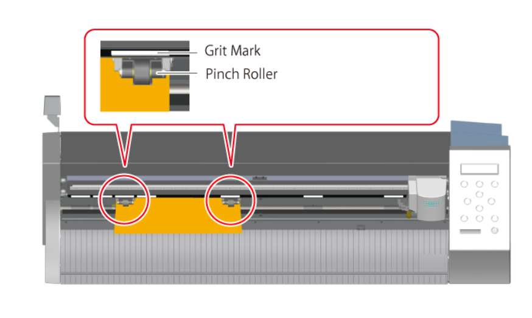

Loading Material Into the Vinyl Cutter
Simplified loading instructions
 Lower loading lever |
 Material and pinch roller placement |
 Raise loading lever |
Images and instruction drawn from: Roland GS-24 User's Manual
Background image: Adobe Stock Image by Svetliy, Edu. License